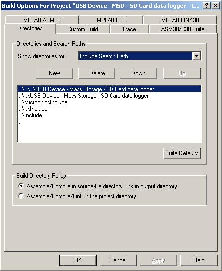

Migration notes -
Microchip USB firmware framework v1.x to v2.x
Project
– Include options requirement
Buffer
location - Sending data from user space
The directory structure
of the USB firmware framework has changed from the v1.x releases. This change helps simplify the process of
combining several of the other software solutions provided by Microchip. The new directory structure also helps
designate which files are part of user code and which files are
part of the stack. The new
directory structure looks like the following.
Note that the stack is no longer required to be installed in the
MCHPFSUSB folder in the root directory.
.\<Install
Directory>
\Microchip
\Include
\Help
\USB
\Documentation
\USB Device - Bootloaders
\USB Device – HID - Mouse
\USB Device – HID – Simple Custom
Demo
\USB Device – Mass Storage – SD Card
data logger
\USB Device – Mass Storage – SD Card
reader
\USB Device – MCHPUSB - Generic
Driver Demo
\USB Host – Mass Storage - Data
Logger
\USB PC – WM_DEVICECHANGE Demo
\USB Precompiled Demos
\USB Tools
The “<Install
Directory>\Microchip” folder contains the stack and documentation required
to design a USB application. Also
contained in the “<Install Directory>” are several example projects.
The “<Install
Directory>\USB Tools” contains some PC software tools. This directory contains the Microchip custom
driver, the driver source code, and a couple of PC examples how to link the
driver into PC software. This folder
also contains the configuration tool required for generating the embedded host
configuration files required to run the stack.
The “<Install
Directory>\Microchip\USB\Documentation” contains documentation for using the
demos, release notes, and other documentation pertaining to the release and
tools available.
The “<Install
Directory>\Microchip\Help” folder contains .chm
help files that describe in detail the API of the embedded host stack. If you have installed other Microchip
libraries into the same <Install Directory> then there may be other help
files located in the directory.
The usb_config.h
file contains definitions that determine how the stack will function. This file defines if the device stack or the
host stack will be enabled, what ping-pong configuration is used, which class
drivers are enabled, and various other options.
Please review the example configuration files for more details about the
options available. The usb_config.h file for embedded host applications is
generated by the USBConfig.exe tool provided in the “<Install
Directory>\Microchip\USB\Utilities\USBConfig”
folder.
For many of the examples
the hardware configuration is different for each of the hardware platforms
available. The HardwareProfile.h
file helps abstract out the hardware differences. This file defines which board is being used
based on the processor selected in MPLAB.
When using the stack to develop new applications, it is important to
change the HardwareProfile.h file to use custom
boards. This can be done by either
removing the predefined settings or by adding a definition for DEMO_BOARD at the top of the file.
Because of the changes in
the directory structure, there are some changes that are required in the
“Project->Build Options->Project” include path settings. The following paths need to be added to the
include path:
..\Include
..\..\Include
..\Microchip\Include
..\..\<Application
Folder>
..\..\..\<Application
Folder>
Here are the settings
used for one of the example projects:

If the project and source
files are not located in the <Install Directory>\<Application
Folder> but instead of folder like <Install
Directory>\<Folder>\<Application Folder> then the above include
paths need to be changed so that each have one more “..\” and that the two
includes that are using the <Application Folder> also include the
additional <Folder> in their path.
For example:
..\..\Include
..\..\..\Include
..\..\Microchip\Include
..\..\<Folder>\<Application
Folder>
..\..\..\<Folder>\<Application
Folder>
The v2.1 stack has
several call back functions that need to be defined in the user code. These functions are provided to allow the
user to define their course of action when certain USB events occur without
having to modify the stack code itself.
The following functions need to be defined.
void USBCBSuspend(void)
void USBCBWakeFromSuspend(void)
void USBCB_SOF_Handler(void)
void USBCBErrorHandler(void)
void USBCBCheckOtherReq(void)
void USBCBStdSetDscHandler(void)
void USBCBInitEP(void)
void USBCBSendResume(void)
Some of the device
classes require the use of the endpoint 0.
These functions may require the use of the USBCBCheckOtherReq()
function to call back into the device driver code. For an example of this use, review any of the
Mass Storage examples.
All applications will
need to take action in the USBCBSuspend() and USBCBWakeFromSuspend()
functions in order to insure they meet the maximum current requirements during
suspend.
The USBCBInitEP() is also required by all of the class drivers to
enable the endpoints that they use. This
can be done with the USBEnableEndpoint() function. Any IN endpoints not only need to enable the
endpoints but also need to arm the IN endpoints so that they are ready to
receive data in that input. Enabling the
endpoint can be done using the class specific functions.
As mentioned in the above
call back functions section, it is important that the user device in the USBCBInitEP() function the appropriate endpoint enable
functions. It is also important to
enable any IN endpoints. This allows the
endpoint to be ready to receive data as soon as the host sends a transaction to
that endpoint. Please see the provided
demo projects.
The v2.x USB stack
defines the concept of a USB_HANDLE. The handle is used to determine if a transfer
is complete. A handle is returned for
each transmission sent out. If ping-pong
is enabled this means that two handles per endpoint and direction combination
are possible. Each handle should be
saved to a different variable so each can be checked independently.
To check to see if a
transfer complete, pass the handle to the USBHandleBusy() function.
This function will return FALSE
if the transfer is still in process and TRUE if the transfer is complete. The
class driver specific transmit and receive functions should return the USB_HANDLE. For example:
USB_HANDLE USBGenericInHandle = 0;
if(!USBHandleBusy(USBGenericInHandle))
{
//Transfer counter bytes of data from INPacket on endpoint USBGEN_EP_NUM
USBGenericInHandle = USBGenWrite(USBGEN_EP_NUM,(BYTE*)&INPacket,counter);
}
There are some very
specific changes to the Microchip Generic class driver code as provided that
need to be highlighted.
In
the 1.x releases of the USB firmware framework the transferred and received
data was buffered in the device class layer.
This allowed users to send data to the computer and immediately start
refilling the buffer without having to wait for the original transfer to
complete.
With
release of the 2.x version USB framework, the buffering of the data transferred
has been removed. This means that
applications that can’t wait until the previous transfer is complete must
double buffer the data in the application layer. The data is now transferred directly from the
user buffer.
As
stated in the previous section “Data buffering removed”, the data transferred
by the generic driver is no longer buffered in the class driver. The combination of sending data from the user
data space and the limited USB dual port RAM on the PIC18F4550, PIC18F4450, and
PIC18F4553 families, the user needs to be able to reuse as much of the dual
port RAM as possible. Since the BDT
usage changes based on the number of endpoints use and the ping-pong mode
selected, the end address of the BDT may not be easily calculated. This modification is not required for the
PIC18F87J50 or PIC24J256GB110 family devices.
In order to allocate user data in the same section as the BDT, use the #pragma directive and define a section name that the user
variables should be located at. For
example:
#pragma udata USB_VARS
DATA_PACKET INPacket;
DATA_PACKET OUTPacket;
#pragma udata
This
locates these two variables in the USB_VARS section. This is only one half of the equation. Without a specific address the linker will
ignore the #pramga definition and define the variable
wherever it finds room. The second step
is to define where the USB_VARS section is located. This modification is made in the linker file
for specific device. At the end of the
linker file add a line that defines what section of RAM the variables are
located in. For example:
SECTION NAME=USB_VARS RAM=usb4
The
“usb4” section name in this case is the name defined in the linker file:
ACCESSBANK NAME=accessram START=0x0 END=0x5F
DATABANK NAME=gpr0 START=0x60 END=0xFF
DATABANK NAME=gpr1 START=0x100 END=0x1FF
DATABANK NAME=gpr2 START=0x200 END=0x2FF
DATABANK NAME=gpr3 START=0x300 END=0x3FF
DATABANK NAME=usb4 START=0x400 END=0x4FF PROTECTED
DATABANK NAME=usb5 START=0x500 END=0x5FF PROTECTED
DATABANK NAME=usb6 START=0x600 END=0x6FF PROTECTED
DATABANK NAME=usb7 START=0x700 END=0x7FF PROTECTED
ACCESSBANK NAME=accesssfr START=0xF60 END=0xFFF PROTECTED
SECTION NAME=CONFIG ROM=config
STACK SIZE=0x100 RAM=gpr3
The format of the
configuration descriptor was changed from a structure to a byte array. This removes the requirement of having to
modify a configuration descriptor structure definition to add information to
the configuration descriptor. This,
however, creates a situation where entries that were previously added to the
structure now need to be add as individual bytes. Please be aware that configuration descriptors
created for the v1.x stack will need to be converted to this new format by
splitting up the word or larger entries manually or using the assistance macros
discussed later in this section. For
example:
Old entry:
0x55,
0xAAFF,
0x11,…
New entry:
0x55,
0xFF,0xAA,
0x11,…
To help the conversion
and to help make the code more readable, an optional macro named DESC_CONFIG_WORD() as been added that does this split
automatically. DESC_CONFIG_BYTE() and DESC_CONFIG_DWORD() have been added for consistency. For example:
New entry:
0x55,
DESC_CONFIG_WORD(0xAAFF),
0x11,…
-- Or --
New entry:
DESC_CONFIG_BYTE(0x55),
DESC_CONFIG_WORD(0xAAFF),
DESC_CONFIG_BYTE(0x11),…
The Microchip name and logo, the Microchip logo,
MPLAB, and PIC are registered trademarks of Microchip Technology Incorporated
in the
PICDEM is a trademark of
Microchip Technology Incorporated in the
Microsoft, Windows, and
Windows Vista are either registered trademarks or trademarks of Microsoft
Corporation in the
Borland, and C++ Builder
are trademarks or registered trademarks of Borland Software Corporation in the
Linux is the registered trademark of Linus Torvalds in the